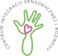

Wielkie kroki małych ludzi
Jesteś rodzicem lub opiekunem? Zobacz jak możemy Ci pomóc

Witamy w Sensorio!
Jesteśmy placówką z 10 letnim doświadczeniem w opiece, kształceniu oraz wspomaganiu rozwoju najmłodszych. Zainspirowani oraz zmotywowani dotychczasowymisukcesami jako Prywatne Przedszkole im. Papy Smerfa postanowiliśmy stworzyć nasze centrum. Dedykujemy je dzieciom oraz młodzieży.
Tworzymy przestrzeń dopasowaną w najmniejszych szczegółach. Najnowocześniejszy sprzęt, profesjonalne wyposażenie, które razem w połączeniu z metodami pracy oraz w pełni wykwalifikowaną kadrą stworzy spójną, harmonijną całość.
Naszym celem jest służyć profesjonalną pomocą i wsparciem. Operamy się na sprawdzonych i wypróbowanych metodach pracy popartą wiedzą z zakresu psychologii oraz pedagogiki. Udzielamy fachowe wsparcie medyczne, diagnostyczne, oraz pełną terapię. Metody pracy dostosowujemy indywidualnie do potrzeb oraz możliwości.
Zapraszamy Serdecznie
Zespół "Sensorio"